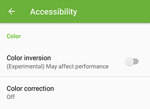
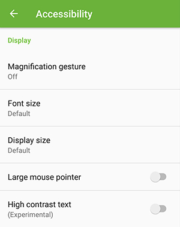
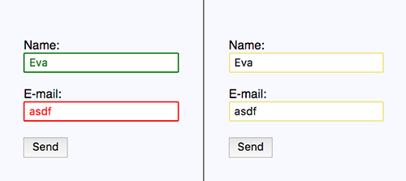
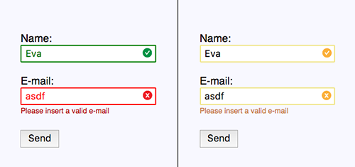

La Accesibilidad de todos los días
Eva Ferreira -
@evaferreira92
María
Eva
ngelina
Ferreira
Kuzminski
UI Developer at
Aerolab
CSSConf Argentina
Team
1. Media Queries
OS options => Media Queries
 
Media Queries -
Level 5
Inverted colors
Reduced motion
Reduced transparency
2. Do NOT trust color
 
3. Give Feedback
CSSWG drafts are in GitHub
:)
Gracias!
Slides:
www.evaferreira.com.ar/
Slides en
GitHub (demos!)
@evaferreira92
(: